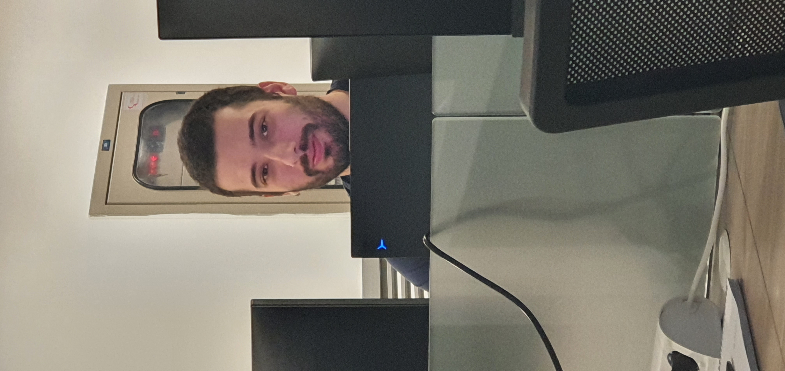

<div class="mt-20">
    <div class="">
        <div class=" imagine ml-3 object-left object-contain h-30 w-52 hidden md:flex md:order-1 mr-3 h-42 sm:h-30">
            
        </div>
        <div class="object-right object-contain h-48 w-96 md:flex">
            <p class="text-justify">
                Mastropiero en un principio bautizó su madrigal como era costumbre
                Con el primer verso del poema. Lo llamó "La bella y graciosa moza marchose a lavar la ropa"
                Pero luego la longitud de este primer verso le pareció inadecuada para un título
                De modo que rebautizó a su madrigal
                Lo llamó "La bella y graciosa moza marchose a lavar la ropa, la mojó en el arroyuelo y cantando la lavó
                La frotó sobre una piedra, la colgó de un abedul"
                Precisamente Les Luthiers inician su recital de esta noche interpretando
                De Johann Sebastian Mastropiero
                Bueno, "La bella y graciosa moza... ...la colgó de un abedul"
                La bella y graciosa moza
                Marchose a lavar la ropa
                La mojó, la mojó
                La mojó en el arroyuelo
                Y cantando la lavó
                La frotó sobre una piedra
                La colgó de un abedul
                Fa la la fa la la la la
                Después de lavar la ropa
                La niña se fue al mercado
                Un pastor, un pastor
                Un pastor vendía ovejas
                Pregonando a viva voz
                "¡Ved que oveja, ved que lana
                Ved que bestia que animal!"
                La niña la vio muy flaca
                Sin embargo le gustó
                "Yo te pago veinte escudos
                Y no discutamos más!"
                Vuelve la niña cantando
                - Muy contenta con su oveja
                Cuando llegaron al bosque
                - La ovejita se escapó
                La niña desesperada
                - Arrojose encima de ella
                Velozmente y con destreza
                - Aferrola por detrás
                Fa la la fa la la la la
                Llegaba por el camino
                Jinete de altivo porte
                Descendió, descendió
                Descendió de su caballo
                Y a la niña le cantó
                "Yo te pago veinte escudos
                Y no discutamos más"
                La niña ruborizada
                Tan sólo entornó sus ojos
                El jinete, el jinete
                El jinete enamorado
                Dulcemente se acercó
                La mojó en el arroyuelo
                Y cantando la lavó
                Fa la la fa la la la la
                La niña alejose un paso
                Y el jinete tan audaz
                Arrojose encima de ella
                Y aferrola por detrás
                Fa la la fa la la la la
                Viendo a la moza temblando
                La frotó sobre una piedra
                (Fa la la fa la la la la)
                Cuando ya estaba por irse
                La colgó de un abedul
                (No ro no ro no no no)
                Con dolor la niña canta
                "¡Ved que bestia, que animal!"
                (Fa la la fa la la la la)
                Y parece estar muy triste
                Sin embargo le gustó
                Fa la la fa la la la la
            </p>
        </div>
    </div>
</div>